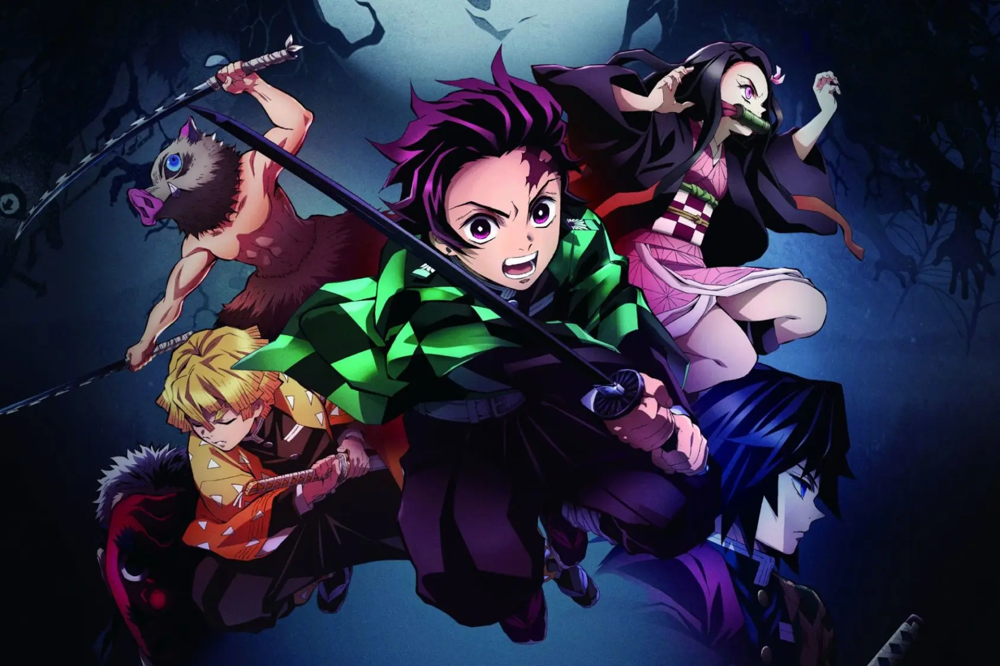
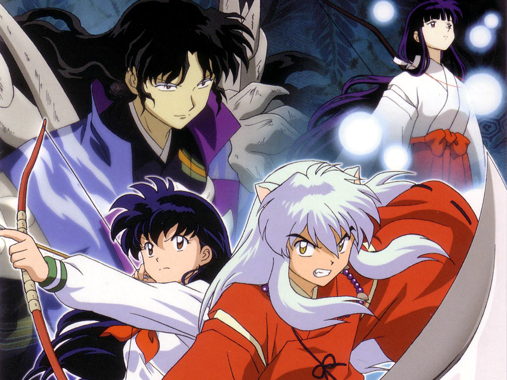

1 / 3

Caption Text
2 / 3

Caption Two
3 / 3

Caption Three
El anime y manga se puede considerar como un arte, que eleva al más alto nivel del espíritu, los sentimientos y pensamientos de los autores del género, así como a los admiradores del mismo y cuyo fin es el entretener a todos los televidentes o a quienes ven las imágenes plasmadas en el papel.el anime es el término que se le da a las animaciones tradicionales o digitales que vienen de procedencia japonesa, el anime es el aquel que toma bases de los mangas y lo transforma en un proceso de digitalización donde pasan los dibujos hechos a mano a lo que son los medios audiovisuales, el proceso que se hace, como lo acabamos de leer, es la digitalización, la cual hace que los personajes tomen vida y tengan volumen, brillo se encuentren en escenarios y de más detalles muy importantes dentro de la historia, todo esto para hacer que el anime sea un género muy característico.